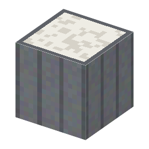

説明
①子ども 熱した白い粉（アルミナ）にアルコールの蒸気を通すと、エチレンというガスになる。
②学生 鉄6＋アルミナ3で作る。火のついたたき火の上に置き、エタノールを持って右クリック → エチレン1袋（瓶は戻る）。管（触媒）は減らない。冷たい管では反応しない。 硫化水素の袋で右クリックすると硫黄（クラウス法 [2-11]）。
③大人 熱いアルミナの表面がエタノールから水を引き抜く（脱水）：C2H5OH → C2H4 + H2O。アルミナは反応を助けるだけで、なくならない（触媒）。
④ガチ 石油が安くなる前、エチレンはこの方法でアルコールから作られていた。今もブラジルやインドではサトウキビのアルコールから「バイオエチレン」を作っている。
作り方
使い道
（このアイテムを使うレシピは無い）